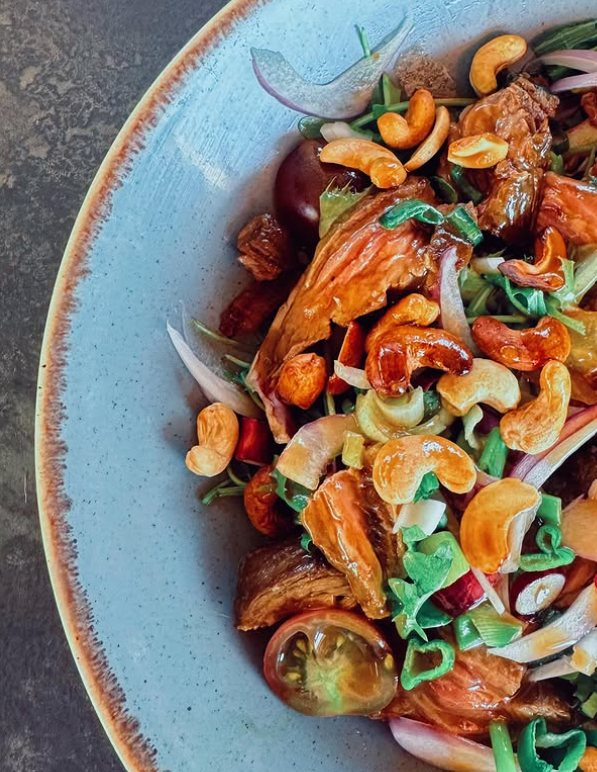
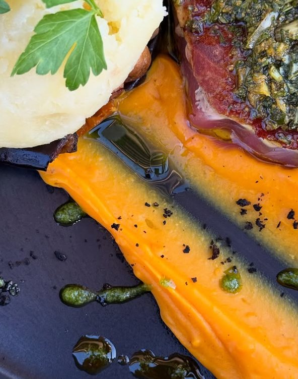

En images
Galerie
La lumière de Collioure, l'assiette et la fête — un avant-goût de votre prochaine visite.






À vivre sur place
Les photos donnent faim. La vue, encore plus.
Réservez votre table et venez écrire votre propre carte postale de Collioure.